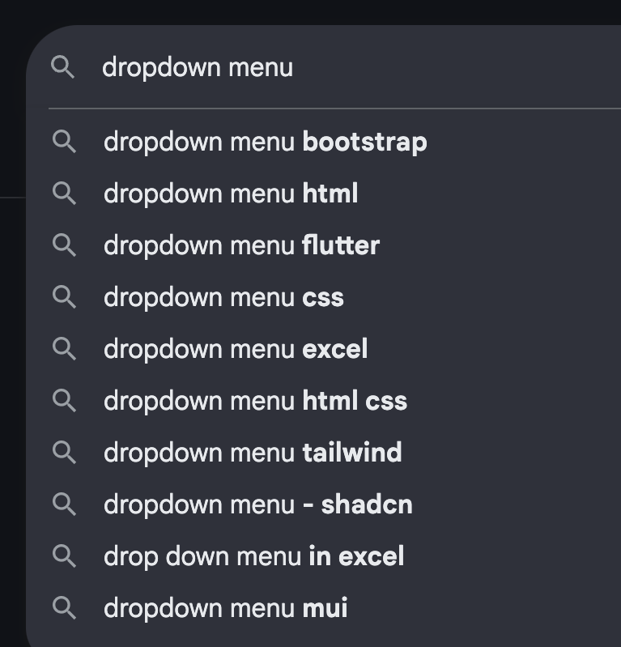
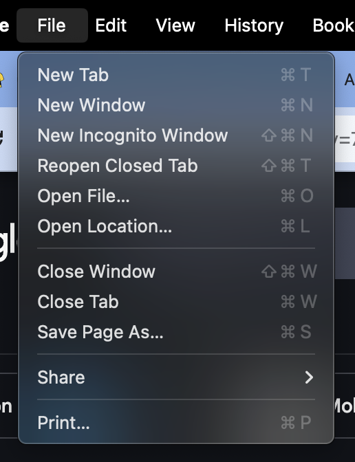
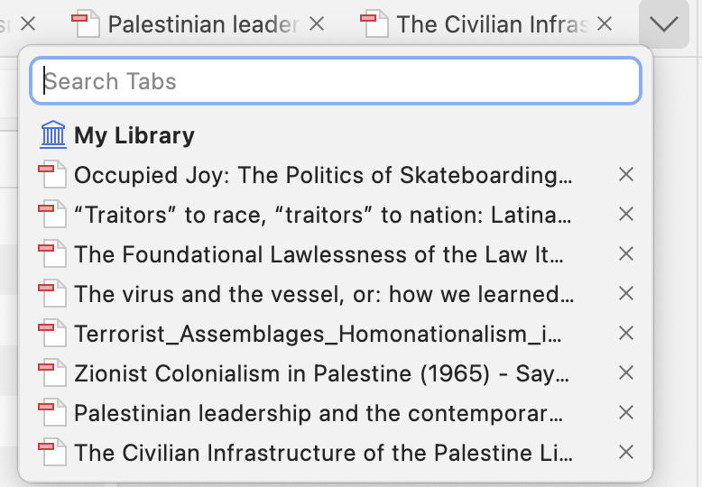

Looking at Commonly Used Dropdown UIs
Dropdown menus are a commonly used tool to help users navigate through a set of options on an interface. Below are some common examples dropdown menus on major tools.
Google Tab Group Dropdown
Apple File Menu Dropdown
Zotero Library Menu Dropdown
Dropdown Comparison Table
Let's compare some dropdowns embedded within Google, Apple, and Zotero, and see how they compare in terms of navigation and more specifically, learnability, memorability, and efficiency
Inputs
Mouse User
Google Tab Group Dropdown
- Single slick access
- Hover over menu items
- Hover away keeps menu open
Apple File Menu Dropdown
- Single slick access
- Hover over menu items
- Hover away opens different menus
Zotero Library Menu Dropdown
- Single slick access
- Hover over menu items
- Hover away keeps menu open
Keyboard User
Google Tab Group Dropdown
- Holding down arrow goes steadily down items stopping at last menu
- left/right keys do nothing
- enter/spacebar click on menu item
- Dropdown menu skipped in tabbing to get to menu
Apple File Menu Dropdown
- Holding down arrow key steadily goes down menu stopping at last item
- right/left arrows/tab change dropdown, rapidly change and restart with holding down
- Initial navigation to file menu (cntrl+option+F2) difficult to do/requires two hands
Zotero Library Menu Dropdown
- Holding down arrow rapidly goes down list and restarts at top
- No other neighboring menu, left/right keys do nothing
- Tab changes to next dropdowns/x buttons
Outputs
Color
Google Tab Group Dropdown
- Fill button light grey for access
- No change from hover color on button clicks
Apple File Menu Dropdown
- Fill button blue for hover
- No change from hover color on button click
Zotero Library Menu Dropdown
- Fill button light grey for hover
- No change from hover color on button click
Focus Order
Google Tab Group Dropdown
- Tab key does nothing
Apple File Menu Dropdown
- Tab key navigates to next menu dropdowns
Zotero Library Menu Dropdown
- Tab press moves focus to “x” button of reading, then to following reading
VoiceOver/Alt Text
Google Tab Group Dropdown
- Announce “menu” and number of items
- At each menu item, alt next provided for the menu items
Apple File Menu Dropdown
- At selection of menu states “menu” and the number of items
- At each menu item, alt next provided for the menu items
Zotero Library Menu Dropdown
- Announce menu for button group
- Read button group out for each button
- Button group for each part of dropdown was confusing —–not clear what the button group was for from the library
Reflections on Dropdown Examples on Learnability, Memorability, Efficiency, and Accessibility
Overall, the three dropdowns were quite similar in terms of their inputs/outputs and therefore similar in their learnability, memorability, and efficiency. They all followed standards for click and mouse navigation via hovering, making them very learnable and subsequently memorable for mouse users.
Keyboard Users: Standard key presses for tab and space/enter to enter and click did the same. Using the up/down arrow keys for navigating menu items was both intuitive with direction, making them learnable and navigable. For Zotero, the rapid speed of descent for holding down keys and restarting at the top of the list improved efficiency, but may detract from accessibility as the screenreader could not keep up with the speed of menu item change in comparison to Apple and Google's slower descent on menu items.
Accessibility: Overall, Zotero was less accessible as not all of the buttons were accessible through keyboard, the left/right keys did not move the cursor for the search box, and the alt text was more dense and difficult to parse in comparison to Google and Apple.
Zotero Dropdown: A Case Study
Zotero is a research tool used to generate citations, organize documents, and take notes. This case study assesses its dropdown menu's learnability, memorability, and efficiency for both keyboard and mouse users.
Let's start with mapping out the different states of Zotero's dropdown menu and what inputs it takes to change states. Here are the state models for mouse and keyboard users
Current State Models


The hover and focus states differ between keyboard and mouse users. Navigating through readings after deleting any from the current tab menu is more difficult for keyboard users as they are automatically reoriented to start at the beginning of the menu group. I propose a different state model which directs keyboard users to the next menu item after the deletion of the previous menu item, mimicking the interaction of a mouse user in which the mouse leaves off in its original position.
To reflect this change in the mouse user, I distinguish between where the mouse user releases their click, reflecting a tradeoff that benefits the efficiency of keyboard users but decrease the learnability and efficiency of mouse users.
Proposed State Models


Dropdown Redesign with Proposed State Model
One thing I noticed in my navigation of Zotero was that there was a surprise drag and drop potential of the readings which wasn't immediately clear on first glance. Let's propose a redesign of the menu that makes this feature more evident


Through this redesign, I made more explicit the different possibilities that the user has to interact with a reading by adding a drag button to make clear that the user can drag to reorder the different readings. This version improves the learnability of the library dropdown by making immediately clear to users that they have an option to reorder the readings. It improves memorability by reminding users of this functionality visually every time they visit the tool, and it improves both efficiency and accessibility by enabling users to place readings in the order they choose and navigate more quickly to more frequently accessed readings.
Reflections
Looking at a variety of dropdown menus, particularly created by companies with bases of millions of users gave me multiple well-established frames of reference to compare benefits and costs of different implementations of dropdown menus.
I liked that the Apple File Menu announced the number of items in the dropdown to give the user more idea of what the rest of the dropdown looked like on preview. Overall all the components were clear in indicating when a button was being hovered over, and were for the most part very easy to navigate with key and with mouse. I maintained the hover color indicator in my design as well.
There were some limited accessibility with regards to the difficulty of navigating to close out readings using a screenreader and keyboard access that differed quite dramatically from Google and Apple's accessibility.
Zotero Reflections: With Zotero, I noticed both strongly accessible and some potential improvements parts of the dropdown. In my redesign of the state models and the dropdown menu itself, I aimed to improve accessibility and efficiency for keyboard users as well as learnability for both keyboard and mouse users. By making it apparent to users through a buttton that they can drag and drop the readings to reorder them, I incorporate more inclusive design practices and solve for a mismatch in the design and intended user of the app by making the drag and drop function easier to learn and access for both keyboard and mouse users.
For Zotero, I believe that mouse users are the most commonly prioritized in the creation of components because it is primarily a Desktop app and mouse use seems like the most used input for users that are not visually impaired. This is because is the most learnable, memorable, and efficient precisely because it is the most intuitive for a first time use. The user does not need to learn or memorize specific key tasks and can use the mouse to navigate the visual field. I believe that the prioritization of this could negatively impact the user experience for keyboard as there are tradeoffs.